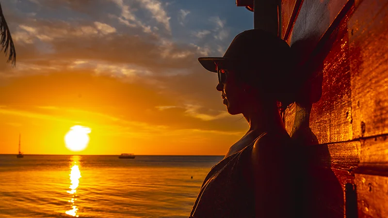

Sunrise Magic at The Split (6:30-7:30)
- Capture that perfect Caribbean sunrise
- Learn the secrets of golden hour shots
- Master palm tree silhouettes
- Create dreamy water reflections
- Coffee and morning vibes included!
Discover the art of smartphone photography while exploring Belize's most charming island paradise. Our intimate 4-hour guided tours combine expert instruction with insider knowledge of the island's hidden gems. Perfect for all skill levels, learn professional techniques while photographing tropical sunrises, colorful streets, and pristine Caribbean beaches.
6:30 AM - 10:30 AM
Master smartphone camera tips and techniques from experienced guides who know Belize's best photo spots
Access secret spots perfect for capturing unique island moments that most Caye Caulker visitors never find
Learn professional travel photography techniques for capturing stunning Caribbean sunrises and golden hour magic
Meet friendly locals and hear their stories while discovering authentic island life through your lens
Transform your mobile device into a professional camera with expert composition and editing guidance
Visit Caye Caulker's most photogenic spots, carefully selected for their unique visual appeal
Make your Belize vacation unforgettable with this unique photography excursion! For less than the cost of a basic camera accessory, unlock the secrets to capturing Caye Caulker's stunning beauty. Join us for an unforgettable morning of photography, expert instruction, and authentic island experiences.
Learn pro techniques using your smartphone - no expensive gear needed!
Access secret photo spots in Caye Caulker most tourists never find
Create Instagram-worthy shots that showcase authentic Belize
Sign up above to receive our free Caye Caulker Island Photography Guide!
What Our Photographers Say
"The sunrise session in Caye Caulker was absolutely magical. I learned so much about smartphone photography while capturing Belize's beauty. Meeting the friendly locals and hearing their stories made this excursion truly special!"
Sarah Mitchell
Vancouver, Canada
"This tour completely changed how I take vacation photos. The hidden spots we visited in Caye Caulker were incredible, and the instructor's knowledge of both photography and Belize made for an unforgettable experience."
Marcus Chen
Singapore
"Such a fun and educational excursion in Belize! The small group size made it easy to get personalized tips and meet great locals along the way. I left with amazing photos of Caye Caulker and skills to capture beautiful moments wherever I travel."
Emma Rodriguez
Barcelona, Spain